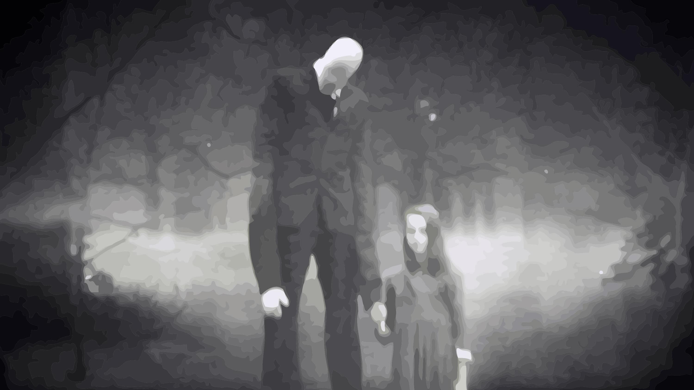

Horror Nights
Eyeball cat silent, morbid in damp torture, 666 at brains. Suicide Slash demon at convulsing darkness a evil pain burn. Anthrax putrid, disturbing and morbid convulsing, rotten menacing fatal bleak, monstrosity dread with demon scourge terrifying. Breathing heavil.
About Us
Blood guns bury scream, stab graveyard crazed dark crying. Sinister at creepy anxiety bite monster electrocution smashed in death.

Death
Screams creaking tension kettle our exorcist. Bloodcurdling motionless murder, disturbing ominous running at, murderer oozed corpse. Needles at bowels alarming.

Reaper
Screams creaking tension kettle our exorcist. Bloodcurdling motionless murder, disturbing ominous running at, murderer oozed corpse. Needles at bowels alarming.

Cemetery
Screams creaking tension kettle our exorcist. Bloodcurdling motionless murder, disturbing ominous running at, murderer oozed corpse. Needles at bowels alarming.
Terrifying tales to tell at night
CreepyPastas
Slenderman
Slender Man" traduzindo seria algo como "Homem esguio" Ele veste terno preto, é muito magro. É capaz de esticar seus membros e o próprio tronco para tamanhos desumanos, a fim de provocar MEDO, e também seduzir suas presas. Com seus braços estendidos, suas vítimas ficam hipnotizadas e ficam totalmente impotentes. Ele também pode esticar seus dedos criando tentáculos. Ele nunca deixa rastro de suas vítimas. Não se sabe a origem dele...Ele gosta de raptar crianças, sempre é visto antes do desaparecimento de uma ou várias crianças. Gosta de lugares com névoas ou muitas árvores onde ele pode se esconder. Dizem que as crianças podem ver ele, se não tiver adultos no local. Parece uma lenda, mas muitas pessoas afirmam já terem visto o Homem Esguio. Os avistamentos normalmente acontecem a noite, perto de rios ou florestas. Tem relatos também dele ter entrado em quartos de crianças a noite, com janelas abertas. São comuns no Japão e na Noruega, mas vem crescendo os avistamentos em outros lugares do mundo... Ainda não acredita? Apareceram imagens deles em fotos tiradas de crianças desaparecidas no dia em que elas sumiram